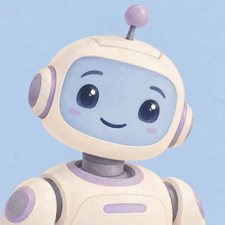

功能实验室
从一份文案、一段熟悉的声音开始，做出可以试听、分享的作品。
继续我的实验
生成与试听
保存这份作品
你的下一段好声音，从这里开始。
按场景挑选声音、语气和示例文稿，提前了解需要准备的声音包。
最近创作
今天，想创作点什么？
选择场景，确认声音准备情况，再换上你的文稿。
常用创作场景
20 个场景，找到适合你的那一个更多实用场景
工作、学习和生活，都有合适的声音暂时没有找到这个场景
试试“课程”“视频”“故事”，或查看全部场景。
每个场景都会新建独立项目 · 文稿与作品保存在本机
让你的文字，开口说话。
给视频配旁白，为课程批量配音，或让故事和角色有自己的声音。
课程文稿每行一段，勾选后批量生成、单独重做、打包保存。每个任务最多 5000 字、100 段，长课程请分批提交。
给每句台词选不同的声音，满意的保留，不满意的单独重做。
3听听效果，保存作品0
让每个角色，都有自己的声音。
收好角色、章节和台词，从这里继续你的声音创作。
把故事，变成听得见的声音
导入文案或直接添加台词，为角色选好声音。
找到适合你的那个声音。
42 种声音，20 套场景模板。按用途、语言和声线挑选，先听再用。

声音配图为原创角色插画。场景标签帮你快速选声，也可以试试其他用途；人物声音的实际效果会随文字和描述变化。
喜欢的声音，下次接着用。
已保存的声音和语气，都在这里。随时试听，选一个继续配音。
让新文案，用熟悉的声音来说
直接录下或导入一段 3–30 秒的清晰人声，再写下录音中的原话。
你的好声音，都帮你存好了。
随时回来听一听，按名称或声音找作品。配音项目内的音频，请到对应项目中试听和导出。
我的配音0
安心创作，有问题在这里找答案。
你的文字、录音和作品，都保存在这台电脑上。
完整配音资源
一键准备全部声音功能，自动补齐缺失资源。暂停或关闭后，已下载的内容会保留。
日常配音、轻松朗读、人物与童声、固定人物声音和声音克隆，一次备齐。
查看资源详情与单独修复
通常只需一键准备。单独准备人物声音时，固定人物声音还需要声音克隆资源。
可选功能 · 我的声音也能调情绪
VoxCPM2 为独立可选资源，不包含在上方一键下载中。查看大小并确认后才下载，准备完成后可离线使用。
免费版
无需购买或激活，准备好模型即可创作。
配音、项目、声音克隆和 CLI 均可免费使用，不限生成次数。文本、设备配置和资源要求仍适用。
常见问题
免费版有哪些使用限制？
免费版不限生成次数，每个任务最多 5000 字、100 段，实际生成速度取决于电脑配置。声音库示例可直接播放，无需调用配音引擎。
怎样给课程批量配音？
点击创作页的“AI 批量课程配音”示例，或粘贴课程文稿，每行一段并勾选“按换行批量配音”。复用讲师声音，生成后逐段试听、单独重做，再打包保存 MP3 / WAV。需要逐段命名时可导入 CSV / TSV 脚本。每个任务最多 5000 字、100 段，长课程请分批提交。
需要一直联网吗？
下载声音包时需要联网。准备好之后，试听和配音都可以离线完成。
两种配音方式怎么选？
想让语气更丰富，选“生动表达”；只需要自然朗读，或电脑内存较小，可以选“轻松朗读”。
换电脑后怎么办？
在新电脑安装免费版，完成配置检查并下载所需模型即可使用，无需设备码。
第一次使用，这样开始
- 去“挑选声音”试听，找到喜欢的声音。
- 在“完整配音资源”一键下载并安装，安装时保持联网。
- 写点文字，开始配音。准备好后离线也可以使用。
智能体与 CLI 接入
把接入说明发给你的智能体，让它调用声悦完成本地配音。支持具有本地命令执行能力的 Codex、Claude Code、WorkBuddy 等工具。
- 先检查配置与声音包。
- 保存脚本示例，修改成自己的文稿。
- 在脚本所在目录运行配音命令，或将说明复制给智能体。
打开设置后，将自动获取本机接入配置。
检查组件与模型
批量配音
查看给智能体的说明
已按当前软件路径自动配置，无需注册命令或另外安装 Node.js。与软件共用声音包和作品；首次安装声音包需联网，准备好后可离线配音。移动软件后，请重新复制接入说明。
声悦 v0.4.7人物声音和语气效果，以实际生成的作品为准。